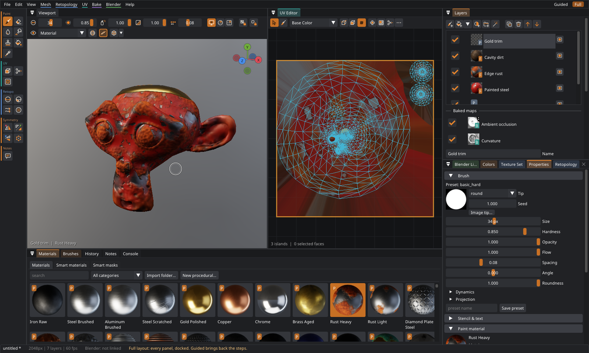
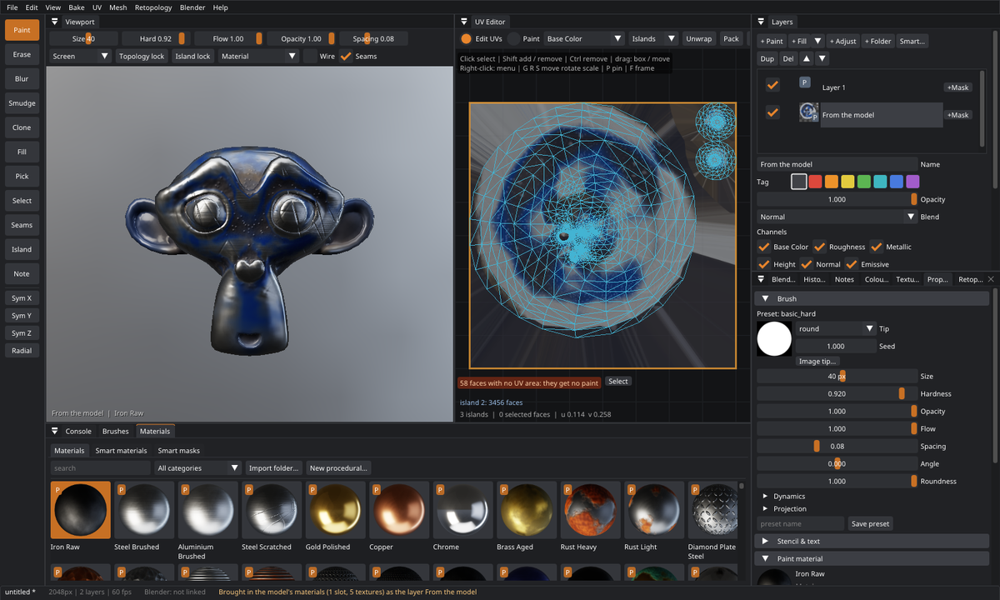

Welcome to Patina
Patina is a texture painter for Linux and Windows. You paint materials such as rust, worn paint, wood or fabric straight onto a 3D model, and they come out as PBR texture maps for Blender, game engines and glTF.

What makes it different
- Paint ignores the UV layout. Each brush dab is worked out in 3D, on the surface under your cursor. Strokes therefore run straight across UV seams, across islands at different scales and across rotated islands, with no breaks or stretching.
- Materials, not just colors. One stroke paints base color, roughness, metallic, height and emission together. The Patina default library has 270 ready-made materials, and you can add your own PBR scans or design procedural ones.
- UV editing in the same app. Paint the part you want as an island and Patina unwraps, orients and sizes it for you, or unwrap, pack, move islands and mark seams by hand. Paint you have already done moves along with the UVs.
- A live link to Blender. Send a mesh from Blender with one click, and the textures come back into a Principled BSDF material automatically. You can keep modeling after you've painted.
- Claude can drive it. Through MCP, Claude can paint, set up layers, unwrap and export. It can also take screenshots of the window so it sees what you see.
patina run job.json runs a job file from scripts and CI.Quick start
- Open a model. Use File › Open… (Ctrl+O) or drag a
.glb,.gltf,.fbx,.obj,.stl,.3mfor.plyonto the window (which formats). Thesamplesfolder includesSuzanne.glb. To start on a primitive shape, use File › New. - Pick a material. Click a sphere in the Materials panel at the bottom. Hover over it for a description.
- Paint. Hold the left mouse button over the model. To orbit, hold Alt and drag, or drag with the middle mouse button. The mouse wheel zooms. [ and ] change the brush size.
- Build it up in layers. Fill layer in the Layers panel covers the whole model with the current material. Choose Edges as the smart mask and the material appears only on the edges. Or click Smart materials and pick a ready-made smart material. New to masks? The beginner's guide to masks and smart materials explains them from scratch.
- Export. Use File › Export Textures… (Ctrl+E), choose a preset for Blender, glTF, Unreal or Unity, and click Export. If you came from Blender, press Ctrl+B instead.
Where to go next
Model formats
| Format | What Patina reads |
|---|---|
glTF .glb / .gltf | Every mesh in the scene with its transforms, UVs, normals, material slots and their textures. The best choice for games and the web. |
FBX .fbx | Binary and ASCII FBX from 2006 on (FBX 6 and 7), from Maya, 3ds Max, Blender, ZBrush, Unreal, Unity and others: every mesh in the scene, UVs (the first UV set), normals and material slots with their textures. Converted to meters and Y up, so a Maya file in centimeters comes in at the right size. |
OBJ .obj | Polygons, UVs, normals and material groups, with the textures its .mtl names. |
STL .stl | Binary and ASCII, as exported for 3D printing. Read as millimeters with Z up, and converted. |
3MF .3mf | The 3D printing package: all objects and components on the build plate with their transforms, the units the file says, texture coordinates when it has them, and its base materials as material slots. |
PLY .ply | ASCII and binary PLY, as scans and generated models come: faces, UVs (per vertex, or MeshLab's per face), normals and vertex colors. Read Z up, as Blender reads it. A PLY without faces (a point cloud) cannot be opened. |
Patina bridge .ptmesh | What the Blender add-on sends. |
Models that come with textures or vertex colors
A textured model (a game asset, a scan, a model made by Meshy, Tripo or another generator, a Sketchfab download) opens looking as it did where it came from. Patina reads each material slot's textures and values from the file and paints them into a layer called From the model at the bottom of the stack: base color, roughness and metallic, the normal map, glow and opacity (cut-outs and see-through parts). Everything you add goes on top, so you can wear it, dirty it, recolor one part or paint over it, and turn the layer off to see the model without it.

.glb opens again with its textures, as the
layer From the model; the status line says what came in.- glTF: the metallic-roughness maps and values, normal map, glow (with its strength), alpha (Mask as a
cut-out, Blend as it is), texture transforms, clearcoat and sheen. Older specular-glossiness materials are
read as roughness. Textures may be inside the
.glbor beside the.gltf. - OBJ: the
.mtlfile'smap_Kd,map_Pr,map_Pm,map_Ke,map_dand normal or bump maps (a bump map that is really a normal map is recognized), andKd,Pr,Pm,Nsanddwhere there is no map, as Blender reads them. - FBX: the textures (embedded or as files) and colors of each material, including the transparency maps Blender and other programs write.
Alpha in the color texture. Hair cards, leaves and lace from game assets often keep their cut-outs only in
the color texture's alpha, and their OBJ or FBX file says nothing about opacity. When that alpha has see-through and
solid parts, Patina makes it the layer's Opacity channel, and the status line says so. An alpha that is even all
over is left out: some assets keep gloss there. To turn it off or weaken it, select the layer From the model:
the Opacity box under Channels switches the see-through on or off, and Channel opacity › Opacity
sets its strength. (The Opacity slider at the top is how strongly the whole layer shows.) The
import_model_textures command takes color_alpha: "opacity" or "ignore" to decide
it yourself.
Vertex colors come in the same way: from glTF (multiplied by the material's color, as glTF says), OBJ
(v x y z r g b), FBX, PLY and Blender objects sent with the add-on. Where a slot has a color texture, OBJ,
FBX and PLY files show the texture, as Blender does. Many generated models and scans carry their color this way.
Textures are looked for where the file says, beside the model, and in textures folders and FBX
.fbm folders next to it. If some are not found, a message names them, and those slots show their color
instead. When the textures are bigger than the texture set (4K textures, say), the texture set grows to match them, up
to 4K, unless you chose a resolution. A model whose materials are only a plain gray brings nothing in.
File › Bring In the Model's Textures (or import_model_textures) does it again: after you deleted
the layer, or to compare with your work. It reads the UVs from the file when the model has the same faces, so it works
after you changed the UVs too. Switch it off in Preferences › Features (The model's own textures).
STL files, and most 3MF files, have no UVs. Patina then makes them with Smart UV Project when the model opens (the status line says so), so you can paint at once. For hard-surface parts it is worth checking the islands in the UV editor, or marking seams and unwrapping again (see UV editing).